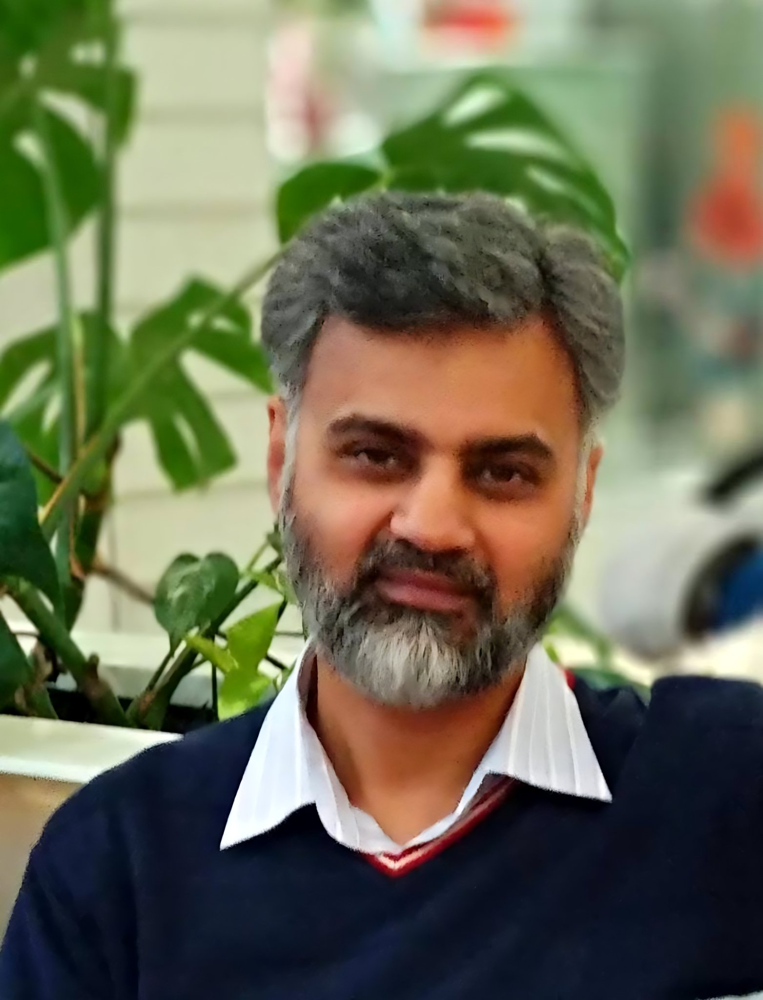

Dr Imran Ishrat
Senior Lecturer | Operations & Supply Chain Management
Ara Institute of Canterbury, New Zealand
Incumbent Fellow, Logistics Institute of New Zealand (LINZ)
Affiliate, South Asia Research Institute (SARI) at the Australian National University

My research interests span industrial engineering, supply chain management, and sustainability. Drawing on my interdisciplinary background, I apply quantitative and qualitative approaches to address real-world problems.
Recent Highlights
2026 — Fellow: Appointed an Incumbent Fellow of the Logistics Institute of New Zealand (LINZ).
2026 — Invited Research Talk: Invited to present research at the South Asia Research Institute (SARI), Australian National University.
2026 — Reviewer: Reviewing for Sustainability (Scopus Q1)
Selected Presentations
Supply Chain Management / Sustainability
- Transformative Supply Chains: Revitalizing the Cashmere Industry in the Global South, 21st ANZAM Operations, Supply Chain and Service Management Symposium, University of Canterbury, New Zealand, 2024.
- Effect of Industry Changes on Artisan Communities in the Luxury Apparel Supply Chains: The Case of Cashmere Industry in India, New Zealand South Asia Centre Symposium, University of Canterbury, New Zealand, 2023.
- The Role and Significance of Geographical Indication for Sustainability of Cashmere Industry, 8th International Conference on Industrial Technology & Management, University of Cambridge, UK, 2019.
- Sustainable Cashmere Value Chains: Challenges and Opportunities for a Developing Economy, School of Engineering & Advanced Technology, Massey University, New Zealand, 2017.
- Cashmere Manufacturing: A Review of the Traditional and the State-of-the-Art Practices on Customer Perception, 22nd Annual Asia Pacific Quality Organization Conference, Rotorua, New Zealand, 2016.
- Customer Relationship Management: Forcing a Paradigm Shift in Supply Chain Management, King Abdulaziz University, Saudi Arabia, 2005.
Operations Management / Industrial Engineering
- Optimization of the Pod Manufacturing Process Parameters Using the Taguchi Method, Institute of Industrial and Systems Engineering Research Conference, Anaheim, USA, 2016.
- A Disruption Neighbourhood Approach to the Airline Recovery Problem, 19th International Federation of Operations Research Society Conference, Melbourne, Australia, 2011.
- Airline Schedule Recovery Models and Methods: A Survey, Asia Pacific Operations Research Society Conference, Jaipur, India, 2009.
- Optimized Schedule Recovery in Airlines: A Review, 43rd Operational Research Society of New Zealand Conference, Victoria University of Wellington, New Zealand, 2008.
- Web Pages of Three Multinational Companies Addressing Consumer Items: Are They Ergonomically Designed?, IEEE IPCC, University of Limerick, Ireland, 2005.
- Architecture of Communication Networks and the Issues Related with Circuit and Packet Switching over TCP/IP, University of Ottawa, Canada, 2002.
Awards & Recognition
- Incumbent Fellow, Logistics Institute of New Zealand (LINZ), New Zealand, 2026.
- Affiliate, South Asia Research Institute (SARI), Australian National University, 2024.
- Dean’s List of Exceptional Doctoral Thesis Award, Massey University, 2022.
- Best Presentation Award, 8th ICITM Conference, University of Cambridge, 2019.
- New Zealand Institute of Mathematics and its Applications Scholarship, 2011.